Home / Past papers / MLF Quiz 1 / this paper
Machine Learning Foundations 15 Mar 26 - 15 Mar 2026
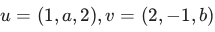
be orthogonal. Which of the following must be true?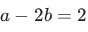
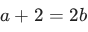
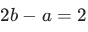
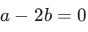
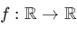
: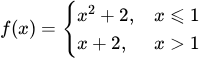
Which of the following is true?- is continuous at
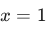
, but not differentiable at . - is both continuous and differentiable at .
- is neither continuous nor differentiable at .
- is differentiable at , but not continuous at .
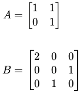
Which of the following is true?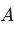
is diagonalizable,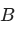
is not diagonalizable.- is not diagonalizable, is diagonalizable.
- Both and are diagonalizable.
- Neither nor is diagonalizable
 for a regression problem where each element is of the form
for a regression problem where each element is of the form  , for
, for 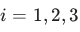
. is the feature and
is the feature and 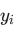
is the label of the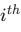
data-point.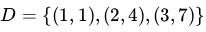
Let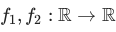
be two regression models such that: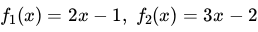
Which of the following options is correct?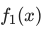
has the lower mean squared loss.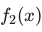
has the lower mean squared loss.- Both models have same mean squared loss.
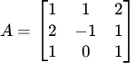
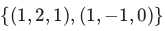
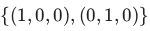
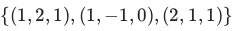
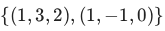
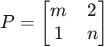
has eigenvalues and . Which of the following options is/are correct?
. Which of the following options is/are correct?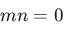
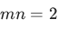
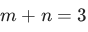
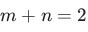
- If and are matrices of the same size, then
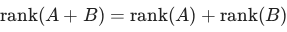
. - The rank of a matrix is equal to the number of non-zero rows in it.
- If is a matrix which is obtained by permuting the rows of the
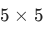
identity matrix, then the rank of is . - If is a non-zero column vector in
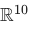
, then the rank of the matrix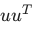
is .
.
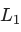
and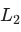
be two lines in defined in parametric form:
defined in parametric form:
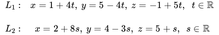
For example, every point on line is of the form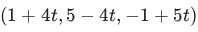
. Which of the following is/are true?- and are parallel
- and are not parallel
- and intersect at a point
- and do not intersect at any point
- Every square matrix with real entries has at least one real eigenvalue.
- A set of two eigenvectors corresponding to the same eigenvalue of a square matrix must be linearly dependent.
- Given a square matrix of order , the set of all eigenvectors for an eigenvalue , along with the zero vector, forms a subspace of
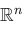
. - A square matrix is not invertible if and only if is one of its eigenvalues.
- Approach (i) is not machine learning.
- Approach (ii) is machine learning.
- Both approaches are machine learning.
- Neither approach is machine learning.
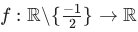
given by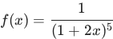
. If the best linear approximation to at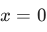
is given as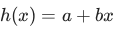
, find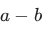
. Your answer should be an integer.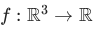
given by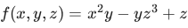
at the point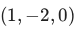
in the direction of the vector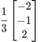
. Your answer should be an integer.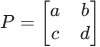
be the projection matrix that projects vectors in onto the line
onto the line 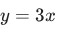
. Let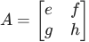
be the matrix that projects vectors in onto the nullspace of . Based on the above data, answer the given subquestions. . Enter your answer correct to two decimal places.
. Enter your answer correct to two decimal places.Answer key
- Q1 (MCQ, 2 marks): A
- Q2 (MCQ, 2 marks): A
- Q3 (MCQ, 3 marks): B
- Q4 (MCQ, 3 marks): B
- Q5 (MCQ, 3 marks): A
- Q6 (MSQ, 3 marks): B, C
- Q7 (MSQ, 3 marks): C, D
- Q8 (MSQ, 3 marks): B, D
- Q9 (MSQ, 3 marks): C, D
- Q10 (MSQ, 2 marks): A, B
- Q11 (SA, 2 marks): 11
- Q12 (SA, 3 marks): 3
- Q13 (SA, 3 marks): 16
- Q14 (SA, 1 marks): 4
- Q15 (SA, 2 marks): -3
- Q16 (SA, 2 marks): 1.24 to 1.26
Concepts this paper tests
Auto-generated summary from the source site. Handy as a checklist; the lessons above explain each idea from scratch.
Here is a structured summary of the core topics, concepts, principles, and equations essential for the exam, followed by Mermaid syntax knowledge graphs.
Core Topics and Concepts
1. Linear Algebra
##### Vectors and Orthogonality
Orthogonal Vectors: Two vectors are orthogonal if their dot product is zero.
- Equation:
##### Matrices
- Diagonalizable Matrices: A matrix is diagonalizable if it can be written as , where is a diagonal matrix.
Eigenvalues and Eigenvectors:
- Eigenvalue equation:
- Eigenvectors corresponding to the same eigenvalue form a subspace.
- Rank of a Matrix: The maximum number of linearly independent row/column vectors.
- Projection Matrix: Projects vectors onto a subspace. For a line defined by vector , the projection matrix is:
##### Basis for Column Space
- The column space of a matrix is spanned by its linearly independent columns.
2. Calculus
##### Continuity and Differentiability
- Continuity at a Point: A function is continuous at if:
- Differentiability at a Point: A function is differentiable at if the derivative exists.
##### Directional Derivative
- The directional derivative of at in the direction of is:
##### Best Linear Approximation
- The best linear approximation of at is:
3. Machine Learning
##### Regression Models
- Mean Squared Loss: Measures the average squared difference between predicted and actual values.
##### Machine Learning Approaches
- Rule-Based Systems: Not considered machine learning.
- Model Training: Training a model on labeled data is machine learning.
4. Geometry
##### Lines in Parametric Form
- Two lines are parallel if their direction vectors are scalar multiples of each other.
- Two lines intersect if they are not parallel and satisfy a common point equation.
Key Equations
- Orthogonality:
- Eigenvalue Equation:
- Projection Matrix:
- Directional Derivative:
- Mean Squared Loss:
Graph 1: Linear Algebra Concepts
Graph 2: Calculus Concepts
Graph 3: Machine Learning Concepts
Graph 4: Geometry Concepts
This summary and the knowledge graphs should help you understand the relationships between the core topics and prepare effectively for the exam.